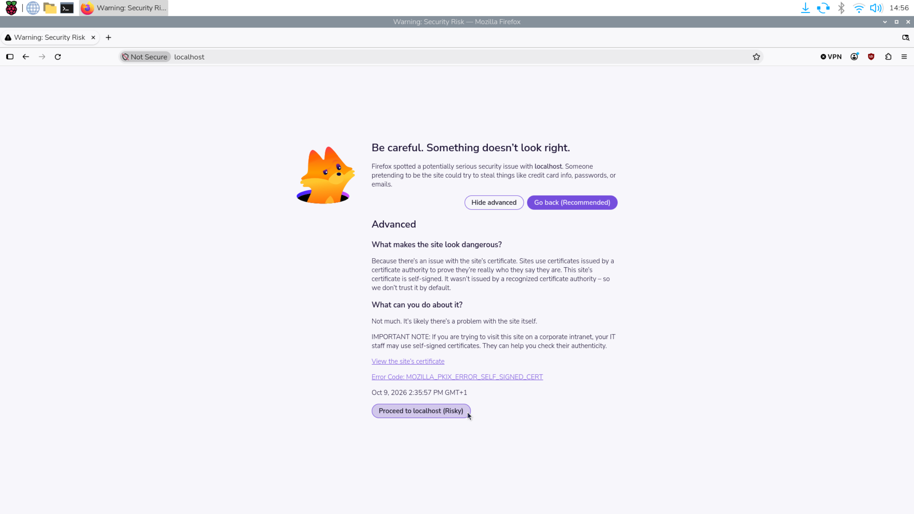

3. Installing Eclipse Kura
This procedure installs Eclipse Kura 5.6.2 and Eclipse Temurin JDK 17 on a Raspberry Pi using the commands below. Run them in order in a terminal on the Raspberry Pi, either locally or through SSH.
The Kura package is for 64-bit ARM (aarch64). The Adoptium repository command
uses trixie, so it must match the operating system's Debian release. Confirm
these prerequisites before continuing. You also need internet access, a user
with sudo privileges, and wget available for the download step.
3.1 Update the Operating System
Refresh the list of available packages and versions from the configured repositories.
sudo apt update
Upgrade installed packages to the newer versions available in those repositories. Confirm the changes when prompted.
sudo apt upgrade
3.2 Download the Kura Installer
Download the Kura 5.6.2 installer for 64-bit ARM and save it in the current directory.
wget http://download.eclipse.org/kura/releases/5.6.2/kura_5.6.2_generic-aarch64_installer.deb
Keep this file in the current directory for the installation step in section 3.4.
3.3 Install JDK 17
Install the download tools (wget and curl), the signing-key tool (gpg), and
trusted certificate authorities (ca-certificates). The -y option automatically
confirms the installation prompt.
sudo apt install -y wget curl gpg ca-certificates
Create the directory where APT will read repository signing keys. The -p option
also creates missing parent directories and accepts an existing directory.
sudo mkdir -p /etc/apt/keyrings
Download Adoptium's public signing key, convert it to the binary format used here,
and save it in the keyring directory. APT uses this key to verify packages from
the Adoptium repository; > /dev/null hides the copy printed by tee.
curl -fsSL https://packages.adoptium.net/artifactory/api/gpg/key/public | gpg --dearmor | sudo tee /etc/apt/keyrings/adoptium.gpg > /dev/null
Allow all users to read the key file, while allowing only its owner to change it. This lets APT read the signing key.
sudo chmod 644 /etc/apt/keyrings/adoptium.gpg
Add the Adoptium package repository for Debian Trixie to APT's configuration.
The signed-by setting tells APT to verify this repository using the key saved above.
echo "deb [signed-by=/etc/apt/keyrings/adoptium.gpg] https://packages.adoptium.net/artifactory/deb trixie main" | sudo tee /etc/apt/sources.list.d/adoptium.list
Refresh the package list again, this time including the newly added Adoptium repository.
sudo apt update
Install Eclipse Temurin JDK 17, which includes the Java runtime and development
tools. The -y option automatically confirms the installation prompt.
sudo apt install -y temurin-17-jdk
Display the version of the Java runtime selected by the system. Check that it reports Java 17.
java -version
Display the version of the Java compiler selected by the system. Check that it also reports version 17. If either check shows another version, resolve the active Java selection before continuing.
javac -version
3.4 Install Kura and Restart the Device
Install the downloaded Kura package and its dependencies through APT. The ./
prefix tells APT to use the installer file in the current directory.
sudo apt-get install ./kura_5.6.2_generic-aarch64_installer.deb
Restart the Raspberry Pi after the installation finishes successfully. This also ends the current SSH session; wait for the device to start before reconnecting.
sudo reboot
3.5 Accessing the Administration Interface
After the Raspberry Pi restarts, open the Kura administration console and complete the initial login setup.
3.5.1 Open the Console
Choose the address according to where you are running the browser:
| Browser location | Console address |
|---|---|
| On the Raspberry Pi itself | https://localhost |
| On another computer that can reach the Raspberry Pi | https://<ip_address> |
Replace <ip_address> with the Raspberry Pi's IP address. When using another
computer, localhost refers to that computer, so use the Raspberry Pi's address.
3.5.2 Handle the Certificate Warning
The browser may display a certificate warning, as shown below. Kura's default HTTPS certificate is self-signed, so the browser cannot automatically verify the device's identity.

For this initial setup, confirm that the address belongs to your Raspberry Pi, then open Advanced and select Proceed to localhost or the equivalent option for the device's IP address. The wording may vary between browsers.
3.5.3 Sign In and Change the Password
For a fresh installation, use the default credentials:
| Field | Value |
|---|---|
| Username | admin |
| Password | admin |
Complete the password-change prompt shown during the initial login. If no prompt appears, use the user menu to select Change password. Set a new password and, if prompted to sign in again, use the updated credentials.
For further details, consult the official Kura Raspberry Pi quick start and the Adoptium Linux installation guide. Console access, default credentials, and certificate warnings are covered in the Kura administration console guide.